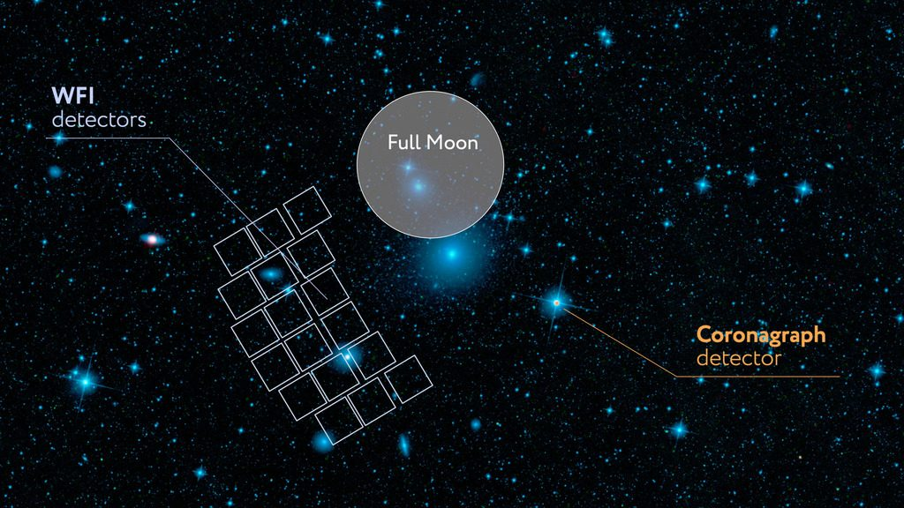

图像
巡天数据的起点是图像。要想从中了解星系、恒星乃至宇宙，首先得重建并理解这些图像：像素代表什么，图像经历了怎样的模糊和采样，又带有哪些缺陷。我在图像方面的工作大多是为南希·格蕾丝·罗曼空间望远镜做的。罗曼的图像清晰但欠采样，必须经过仔细重建，才能用于弱引力透镜研究。

巡天数据的起点是图像。要想从中了解星系、恒星乃至宇宙，首先得重建并理解这些图像：像素代表什么，图像经历了怎样的模糊和采样，又带有哪些缺陷。我在图像方面的工作大多是为南希·格蕾丝·罗曼空间望远镜做的。罗曼的图像清晰但欠采样，必须经过仔细重建，才能用于弱引力透镜研究。
